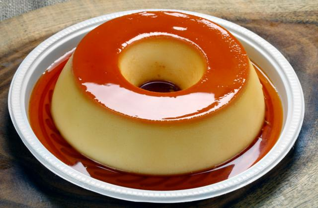

Pudim
Pudim de leite condensado
Ingredientes:
3 ovos
1 lata de leite integral
calda
1 xícara de açúcar
1 xícara de água
Em uma panela de fundo largo, derreta o açúcar até ficar dourado.
Junte a água quente e mexa com uma colher.
Deixe ferver até dissolver os torrões de açúcar e a calda engrossar.
Forre com a calda uma forma com furo central (19 cm de diâmetro) e reserve.
Montagem
Em um liquidificador, bata todos os ingredientes do pudim e despeje na forma reservada.
Cubra com papel-alumínio e leve ao forno médio (180°C), em banho-maria, por cerca de 1 hora e 30 minutos.
Depois de frio, leve para gelar por cerca de 6 horas.
Desenforme e sirva a seguir.
Abaixo algumas imagens e um vídeo para acompanharem
